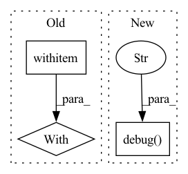

Pattern ID :28038
Before Change
record_mean("b", -44.4)
record("a", 5.5)
dump()
with ScopedConfigure (None, None):
info("^^^ should see b = 33.3")
with ScopedConfigure(str(tmp_path / "test-logger"), ["json"]):
record("b", -2.5)After Change
assert logger.level == INFO
logger.set_level(DEBUG)
assert logger.level == DEBUG
logger.debug("should appear" )
logger = configure(folder=str(tmp_path))
assert logger.dir == str(tmp_path)
logger.record("a", 3)
logger.record("b", 2.5)In pattern: SUPERPATTERN
Frequency: 3
Non-data size: 3
Instances Fragment ID: 83002722
Project Name: dlr-rm/stable-baselines3
Commit Name: b52c6fc18fa4b48a259c839e8159b6c9f826e8ad
Time: 2021-06-14
Author: antonin.raffin@ensta.org
File Name: tests/test_logger.py
M Class Name: AnonimousClass
N Class Name: AnonimousClass
M Method Name: test_main(1)
N Method Name: test_main(1)
M Parent Class:
N Parent Class:
M File Name: tests/test_logger.py
N File Name: tests/test_logger.py
M Start Line: 110
M End Line: 145
N Start Line: 146
N End Line: 173
Before Change
replicas=3,
)
with flow :
with kubernetes_tools.get_port_forward_contextmanager(
"test-flow-slow-process-executor-ns", flow.port_expose
):
// sleep as the port forward setup can take some timeAfter Change
)
// start port forwarding
logger.debug(f" Start port forwarding" )
gateway_pod_name = (
core_client.list_namespaced_pod(
namespace=namespace, label_selector="app=gateway"
) Fragment ID: 83002721
Project Name: jina-ai/jina
Commit Name: 6e9e7ef32f61cab04c6efc7a9f21659d26b50fdb
Time: 2022-01-10
Author: joan.martinez@jina.ai
File Name: tests/k8s/test_graceful_request_handling.py
M Class Name: AnonimousClass
N Class Name: AnonimousClass
M Method Name: test_linear_processing_time_scaling(3)
N Method Name: test_linear_processing_time_scaling(2)
M Parent Class:
N Parent Class:
M File Name: tests/k8s/test_graceful_request_handling.py
N File Name: tests/k8s/test_graceful_request_handling.py
M Start Line: 261
M End Line: 322
N Start Line: 360
N End Line: 440
Before Change
replicas=3,
)
with flow :
with kubernetes_tools.get_port_forward_contextmanager(
"test-flow-slow-process-executor", flow.port_expose
):
client_kwargs = dict(After Change
)
// start port forwarding
logger.debug(f" Start port forwarding" )
gateway_pod_name = (
core_client.list_namespaced_pod(
namespace=namespace, label_selector="app=gateway"
) Fragment ID: 83002718
Project Name: jina-ai/jina
Commit Name: 6e9e7ef32f61cab04c6efc7a9f21659d26b50fdb
Time: 2022-01-10
Author: joan.martinez@jina.ai
File Name: tests/k8s/test_graceful_request_handling.py
M Class Name: AnonimousClass
N Class Name: AnonimousClass
M Method Name: test_no_message_lost_during_kill(3)
N Method Name: test_no_message_lost_during_kill(2)
M Parent Class:
N Parent Class:
M File Name: tests/k8s/test_graceful_request_handling.py
N File Name: tests/k8s/test_graceful_request_handling.py
M Start Line: 162
M End Line: 253
N Start Line: 251
N End Line: 355